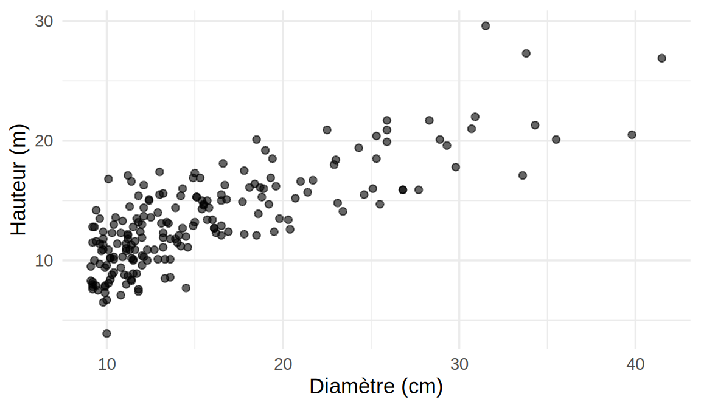
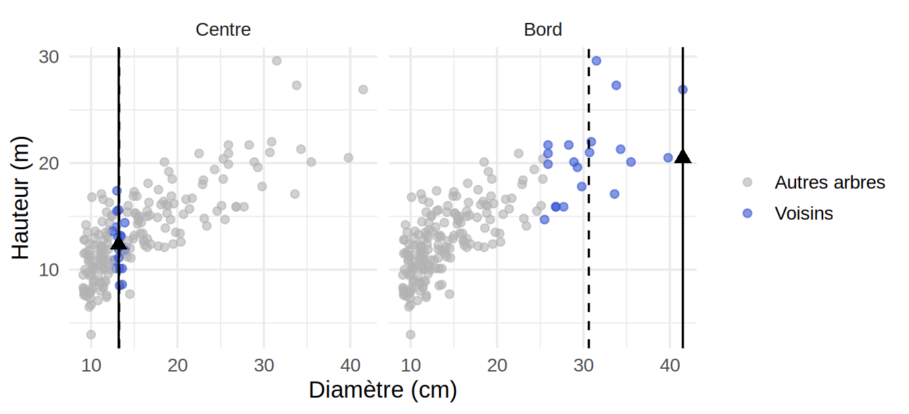
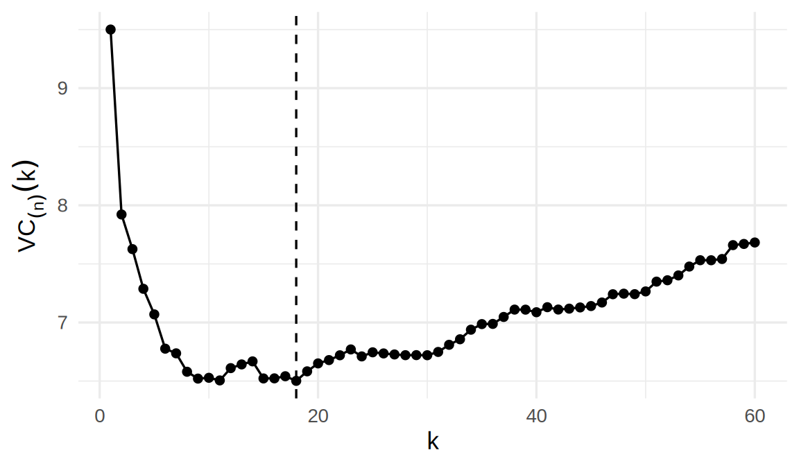
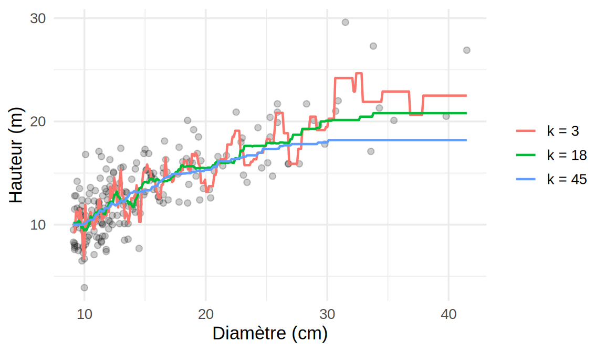
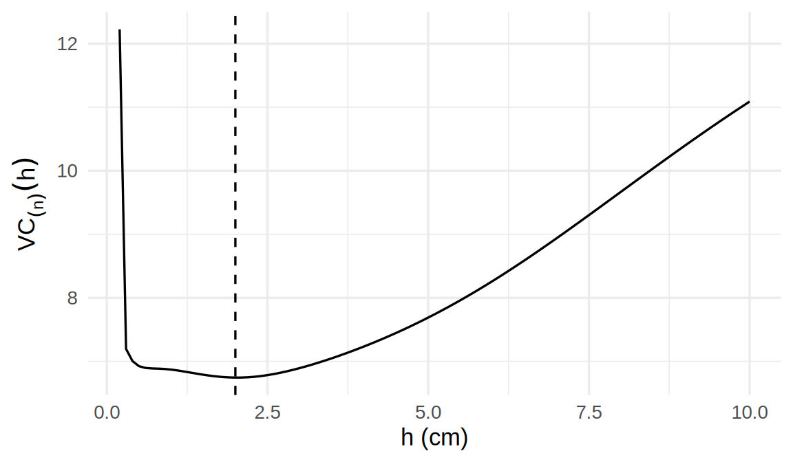
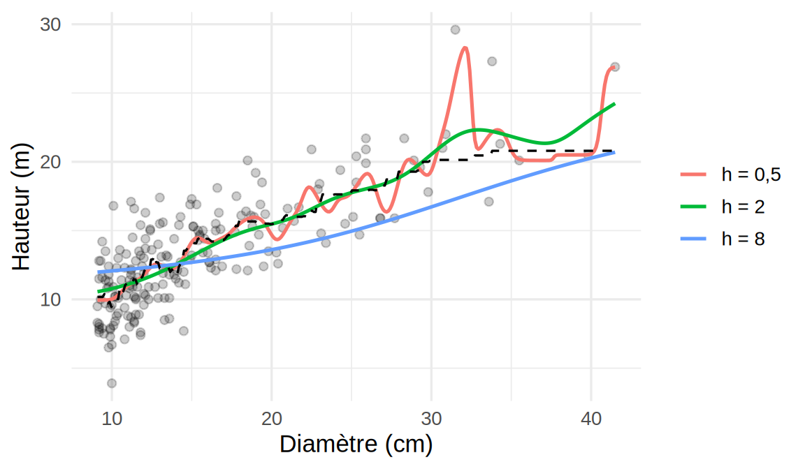
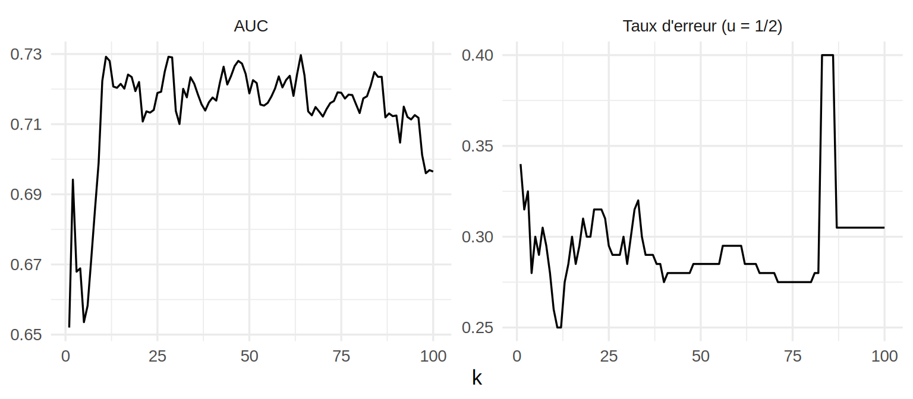

library(FNN)
library(ggplot2)
library(dplyr)7 Régression non paramétrique : \(k\) plus proches voisins et estimateur à noyau
Ce chapitre utilise les librairies R suivantes.
Ce chapitre présente deux estimateurs non paramétriques d’une fonction de régression, les \(k\) plus proches voisins et l’estimateur à noyau, qui ne postulent ni l’un ni l’autre de forme fonctionnelle. Les exemples reprennent le jeu de données arbres du Chapitre 5. La réponse \(Y\) est la hauteur de l’arbre (height_m, en m) et la variable explicative \(X\) est son diamètre à hauteur de poitrine (diameter_cm, en cm). Le nuage de points montre que la relation entre \(X\) et \(Y\) n’est pas linéaire : la hauteur croît rapidement avec le diamètre pour les petits arbres, puis de plus en plus lentement. Au Chapitre 5, on avait contourné le problème en passant à l’échelle log-log. Ici, on laisse plutôt les données donner sa forme à la courbe.
arbres <- read.csv("Jeux de données/arbres.csv")
D <- arbres$diameter_cm
H <- arbres$height_m
n <- length(D)
ggplot(arbres, aes(diameter_cm, height_m)) +
geom_point(alpha = 0.6) +
labs(x = "Diamètre (cm)", y = "Hauteur (m)") +
theme_minimal(base_size = 13)
arbres.
7.1 Estimateur des \(k\) plus proches voisins (\(k\)NN)
7.1.1 Définition
On suppose que la relation entre \(X\) et \(Y\) s’écrit \[Y_i = f(X_i) + \epsilon_i,\] où \(f\) est une fonction inconnue à estimer, supposée assez lisse (deux fois dérivable), et \(\epsilon_i\) vérifie \(E[\epsilon_i\mid X_i] = 0\). Sous ces hypothèses, \[f(x) = E[Y\mid X = x].\] On suppose de plus \(X\) continue, de sorte que \(P(X_i = X_{j}) = 0\) si \(i\neq j\).
Posons \(d_i(x) = |X_i - x|\) et ordonnons ces distances, \(d_{(1)}(x) \leq \cdots \leq d_{(n)}(x)\). L’ensemble des \(k\) plus proches voisins de \(x\) est \[N_k(x) = \{i : d_i(x) \leq d_{(k)}(x)\},\] et l’estimateur des \(k\) plus proches voisins (\(k\)NN) est \[\hat f(x) = \frac{1}{|N_k(x)|}\sum_{i\in N_k(x)} Y_i,\] où \(|N_k(x)|\) est le nombre d’éléments de \(N_k(x)\). Si \(d_{(k)}(x) < d_{(k+1)}(x)\), ce qui arrive avec probabilité 1 lorsque \(X\) est continue, \(N_k(x)\) contient exactement \(k\) indices et \(\hat f(x)\) est la moyenne des \(Y_i\) des \(k\) observations dont le \(X_i\) est le plus près de \(x\). Si \(d_{(k+1)}(x) = d_{(k)}(x)\), \(N_k(x)\) contient aussi les observations ex æquo avec la \(k^{\text{e}}\), donc plus de \(k\) indices.
En R, la fonction knn.reg de la librairie FNN calcule cet estimateur lorsqu’il n’y a pas d’ex æquo. Elle traite les ex æquo autrement (voir la remarque suivante), alors on programme plutôt l’estimateur directement dans les exemples.
Remarque — Valeurs ex æquo
Les diamètres d’arbres sont mesurés au dixième de centimètre près. On n’y trouve que 113 valeurs distinctes pour 200 arbres, contrairement à l’hypothèse \(P(X_i = X_{j}) = 0\). Avec la définition ci-dessus, tous les ex æquo en \(d_{(k)}(x)\) sont retenus, et \(\hat f\) ne dépend pas de l’ordre des lignes du jeu de données. La fonction knn.reg retient plutôt exactement \(k\) voisins et départage les ex æquo de façon arbitraire. Plus grave, lorsqu’elle calcule le critère de validation croisée, elle peut retenir l’observation \(i\) elle-même parmi ses propres voisins quand un autre arbre a le même diamètre, ce qui sous-estime l’erreur de prédiction (voir l’exemple sur le choix de \(k\)). L’effet est d’autant plus grand que \(X\) est fortement discrétisée.
Remarque — Choix de la distance avec une seule variable explicative
L’estimateur \(k\)NN ne dépend de la distance que par l’ordre qu’elle induit sur les observations, c’est-à-dire que seule l’identité des \(k\) plus proches voisins compte, pas la valeur de \(d_i(x)\). Avec une seule variable explicative, toute distance de la forme \(d_i(x) = \phi(|X_i - x|)\), avec \(\phi\) strictement croissante, donne le même ensemble \(N_k(x)\), donc le même \(\hat f\). Par exemple, \(|X_i - x|\), \((X_i - x)^2\) et \(e^{|X_i - x|}\) donnent les mêmes voisins. Le choix de la distance ne se pose qu’avec plusieurs variables explicatives, parce que la façon de combiner les écarts sur chaque variable change alors les voisins retenus.
7.1.2 Compromis biais-variance et choix de \(k\)
Le comportement de \(\hat f\) dépend de \(k\). Cette section examine comment son biais et sa variance varient avec \(k\), puis en déduit comment choisir \(k\). Pour simplifier, on suppose qu’il n’y a pas d’ex æquo, de sorte que \(|N_k(x)| = k\). Conditionnellement aux \(X_i\), et lorsque les \(X_i\) de \(N_k(x)\) sont proches de \(x\), un développement de Taylor de \(f\) autour de \(x\) donne \[E[\hat f(x)] \approx f(x) + f'(x)\,\frac{1}{k}\sum_{i\in N_k(x)}(X_i - x) + \frac{1}{2k}f''(x)\sum_{i\in N_k(x)}(X_i - x)^2.\] Le terme du premier ordre fait intervenir la moyenne des écarts \(X_i - x\) des voisins, dont la taille dépend de la position des voisins autour de \(x\).
Remarque — Hypothèse de symétrie du voisinage
Le terme du premier ordre est négligeable seulement si les \(X_i\) de \(N_k(x)\) sont répartis à peu près symétriquement autour de \(x\), c’est-à-dire si \(\frac{1}{k}\sum_{i\in N_k(x)}(X_i - x) \approx 0\). C’est le cas loin des bords et lorsque la densité de \(X\) varie peu autour de \(x\). Si l’une de ces deux conditions n’est pas remplie, le biais contient aussi le terme \(f'(x)\,\frac{1}{k}\sum_{i\in N_k(x)}(X_i - x)\), qui peut dominer celui en \(f''(x)\).
Sous cette hypothèse, \[\mbox{biais}[\hat f(x)] \approx \frac{1}{2k}f''(x)\sum_{i\in N_k(x)}(X_i - x)^2,\] quantité qui croît avec \(k\) (les voisins sont de plus en plus éloignés de \(x\)). Près des bords, au contraire, les voisins sont tous du même côté de \(x\) et c’est le terme du premier ordre \(f'(x)\,\frac{1}{k}\sum_{i\in N_k(x)}(X_i - x)\) qui domine : c’est le biais de bord. Par exemple, les voisins des plus gros arbres ont tous un diamètre plus petit et, comme \(f\) est croissante (\(f'(x) > 0\)), \(\hat f\) y sous-estime la hauteur. La Figure 7.2 oppose les deux situations.
k.ill <- 20
x.ill <- c(Centre = median(D), Bord = max(D))
vois <- do.call(rbind, lapply(names(x.ill), function(nom) {
d <- abs(D - x.ill[[nom]])
data.frame(panneau = nom, x = x.ill[[nom]], D = D, H = H,
voisin = d <= sort(d)[k.ill] + 1e-8)
}))
vois <- mutate(vois, panneau = factor(panneau, levels = names(x.ill)))
# moyenne des diamètres et des hauteurs des voisins (hauteur moyenne = estimation kNN en x)
resume <- vois |>
filter(voisin) |>
group_by(panneau, x) |>
summarise(D = mean(D), H = mean(H), .groups = "drop")
ggplot(vois, aes(D, H)) +
geom_point(aes(colour = voisin), alpha = 0.6) +
geom_vline(data = resume, aes(xintercept = x)) +
geom_vline(data = resume, aes(xintercept = D), linetype = "dashed") +
geom_point(data = resume, aes(x = x, y = H), shape = 17, size = 3) +
facet_wrap(~ panneau) +
scale_colour_manual(values = c(`FALSE` = "grey70", `TRUE` = "#3454d1"),
labels = c("Autres arbres", "Voisins"), name = NULL) +
labs(x = "Diamètre (cm)", y = "Hauteur (m)") +
theme_minimal(base_size = 13)
arbres, au centre (\(x\) = diamètre médian) et au bord (\(x\) = plus gros diamètre). Le trait plein marque \(x\), le trait pointillé la moyenne des diamètres des voisins et le triangle l’estimation \(\hat f(x)\). Au bord, les voisins sont tous à gauche de \(x\) : \(\hat f(x)\) est la moyenne des hauteurs d’arbres plus petits.
Au centre, la moyenne des diamètres des voisins (13,2 cm) est presque égale à \(x\) (13,2 cm). Au bord, elle vaut 30,6 cm, loin sous \(x\) (41,5 cm), et le terme du premier ordre domine.
Quant à la variance, si les \(\epsilon_i\) sont indépendants et \(Var[\epsilon_i\mid X_i] = \sigma^2\), alors, conditionnellement aux \(X_i\), \[Var[\hat f(x)] = \frac{\sigma^2}{k},\] qui décroît avec \(k\). On sélectionne donc le \(k\) qui minimise l’erreur quadratique moyenne \[\mbox{biais}^2[\hat f(x)] + Var[\hat f(x)].\] En pratique, on ne connaît ni \(f''(x)\) ni \(\sigma^2\), et \(k\) est sélectionné par validation croisée. Le critère LOOCV est \[VC_{(n)}(k) = \frac{1}{n}\sum_{i=1}^n \left(Y_i - \hat f_{-i}(X_i)\right)^2,\] où \(\hat f_{-i}\) est l’estimateur \(k\)NN calculé sans l’observation \(i\). Lorsqu’aucun jeu test ne lui est fourni, knn.reg calcule le critère PRESS, qui vaut \(n\,VC_{(n)}(k)\) s’il n’y a pas d’ex æquo.
Exemple — Choix de \(k\) sur arbres
Le code suivant programme l’estimateur \(k\)NN avec la définition de \(N_k(x)\) ci-dessus, puis calcule \(VC_{(n)}(k)\) pour \(k = 1, \ldots, 60\).
# kNN : moyenne des Y_i tels que d_i(x) <= d_(k)(x), ex æquo compris
# (la tolérance 1e-8 évite qu'une erreur d'arrondi brise une égalité de distances)
knn.moy <- function(x, X, Y, k) {
d <- abs(X - x)
mean(Y[d <= sort(d)[k] + 1e-8])
}
# prédictions LOO : estimation de f(D[i]) sans l'observation i, i = 1, ..., n
knn.loo <- function(Y, k) sapply(1:n, function(i) knn.moy(D[i], D[-i], Y[-i], k))
ks <- 1:60
vc <- sapply(ks, function(k) mean((H - knn.loo(H, k))^2))
k.min <- ks[which.min(vc)]
k.min[1] 18# comparaison avec knn.reg pour k = k.min
press.fnn <- knn.reg(train = D, y = H, k = k.min)$PRESS / n
# nombre d'arbres i que knn.reg garde parmi leurs propres voisins
soi <- sum(rowSums(get.knn(matrix(D), k = k.min)$nn.index == 1:n) > 0)
c(VC = vc[k.min], PRESS.n = press.fnn, soi = soi) VC PRESS.n soi
6.501744 6.199754 87.000000 ggplot(data.frame(k = ks, vc), aes(k, vc)) +
geom_line() + geom_point() +
geom_vline(xintercept = k.min, linetype = "dashed") +
labs(x = "k", y = expression(VC[(n)](k))) +
theme_minimal(base_size = 13)
arbres.
Le critère est élevé pour \(k = 1\) (variance maximale), décroît rapidement, puis forme un plateau dont le minimum est en \(k_{\min} = 18\) (\(VC_{(n)}(k_{\min}) = 6{,}50\)), et remonte lentement lorsque le biais prend le dessus. Comme le plateau est assez plat, les valeurs de \(k\) voisines de \(k_{\min}\) donnent une erreur semblable.
Pour \(k = k_{\min}\), knn.reg donne plutôt \(\mbox{PRESS}/n = 6{,}20\). Pour 87 des 200 arbres, l’arbre \(i\) figure parmi ses propres voisins : knn.reg retire un point à distance nulle de \(X_i\), mais pas forcément l’arbre \(i\) lorsqu’un autre arbre a le même diamètre. Sa valeur de \(Y_i\) sert alors à se prédire elle-même, et le critère sous-estime l’erreur de prédiction.
La Figure 7.4 compare l’estimateur pour trois valeurs de \(k\). Avec \(k = 3\), la courbe suit le bruit des observations. Avec \(k = 45\), elle est plus régulière, mais elle écrase la croissance rapide des petits diamètres et sous-estime la hauteur des plus gros arbres, qui ont peu de voisins de leur taille.
grille <- seq(min(D), max(D), length.out = 300)
k.fig <- c(3, k.min, 45)
courbes <- do.call(rbind, lapply(k.fig, function(k) {
data.frame(k = paste("k =", k), x = grille,
f = sapply(grille, function(x) knn.moy(x, D, H, k)))
}))
courbes <- mutate(courbes, k = factor(k, levels = paste("k =", k.fig))) # ordre de la légende
ggplot(arbres, aes(diameter_cm, height_m)) +
geom_point(alpha = 0.2) +
geom_line(data = courbes, aes(x, f, colour = k), linewidth = 0.8) +
labs(x = "Diamètre (cm)", y = "Hauteur (m)", colour = NULL) +
theme_minimal(base_size = 13)
7.1.3 Plusieurs variables explicatives et distance de Mahalanobis
Lorsqu’il y a plusieurs variables explicatives, l’estimateur \(k\)NN garde la même forme et seule la distance change. Avec deux variables, le modèle devient \(Y_i = f(X_{i1}, X_{i2}) + \epsilon_i\), et la distance euclidienne \[d_i(x) = \sqrt{(X_{i1} - x_1)^2 + (X_{i2} - x_2)^2}\] pose problème si les ordres de grandeur des variables diffèrent. Supposons par exemple qu’il faille prédire la hauteur des arbres d’arbres à partir du diamètre et de l’âge (age_years, disponible pour 148 arbres). Parmi ces 148 arbres, le diamètre va de 9 à 31 cm, alors que l’âge va de 15 à 153 ans. Comme la distance euclidienne traite une différence d’un an comme une différence d’un centimètre, l’âge domine le calcul des voisins. La correction consiste à pondérer par l’inverse de la matrice de variance-covariance empirique : \[d_i(x) = \sqrt{\begin{pmatrix} X_{i1}-x_1 \\ X_{i2}-x_2\end{pmatrix}^{\!\top} \boldsymbol V^{-1}\begin{pmatrix} X_{i1}-x_1 \\ X_{i2}-x_2\end{pmatrix}},
\qquad \boldsymbol V = \begin{pmatrix} s_1^2 & s_{12} \\ s_{12} & s_2^2\end{pmatrix}.\] C’est la distance de Mahalanobis. Pour la suite, notons \(\boldsymbol z_i = (X_{i1},\ldots,X_{ip})^\top\) le vecteur des variables explicatives de l’observation \(i\) (sans constante), \(\boldsymbol z = (z_1,\ldots,z_p)^\top\) le point où l’on veut estimer \(f\), et \(\boldsymbol\Sigma\) la matrice de variance-covariance des variables explicatives (estimée par \(\boldsymbol V\)). En notation vectorielle, la distance s’écrit \[d_i(\boldsymbol z) = \sqrt{(\boldsymbol z_i - \boldsymbol z)^\top\boldsymbol\Sigma^{-1}(\boldsymbol z_i - \boldsymbol z)},\] ce qui la généralise à \(p\) variables continues. Lorsque \(\boldsymbol\Sigma = \boldsymbol I\), elle se réduit à la distance euclidienne, et lorsque \(\boldsymbol\Sigma\) est diagonale, à la distance euclidienne sur les variables standardisées. En pratique, on peut transformer les variables par \(\boldsymbol V^{-1/2}\) (ou, plus simplement, les standardiser) avant de calculer les voisins.
Remarque — Distances au carré
En pratique, on omet la racine carrée et on travaille avec les distances au carré, \((X_i - x)^2\) ou \((\boldsymbol z_i - \boldsymbol z)^\top\boldsymbol\Sigma^{-1}(\boldsymbol z_i - \boldsymbol z)\). Comme la racine est strictement croissante, l’ordre des observations reste le même, donc \(N_k(x)\) et \(\hat f\) aussi. Les implémentations comme knn.reg procèdent ainsi pour s’épargner un calcul inutile.
7.2 Estimateur à noyau (Nadaraya-Watson)
7.2.1 Des voisins aux noyaux
On réécrit d’abord l’estimateur \(k\)NN comme une moyenne pondérée, puis on change les poids. L’estimateur \(k\)NN peut s’écrire \[\hat f(x) = \frac{\sum_{i=1}^n \mathbf{1}_{\{i\in N_k(x)\}}Y_i}{\sum_{i=1}^n \mathbf{1}_{\{i\in N_k(x)\}}}.\] Le voisinage peut aussi se définir autrement : \(x\) et \(X_i\) sont voisins si \(|X_i - x| < h\), où le paramètre de fenêtre \(h > 0\) joue le même rôle que \(k\). On obtient alors \[\hat f(x) = \frac{\sum_{i=1}^n K\!\left(\frac{X_i - x}{h}\right)Y_i}{\sum_{i=1}^n K\!\left(\frac{X_i - x}{h}\right)} = \sum_{i=1}^n w_i(x)\,Y_i,\] où \(K(u) = \mathbf{1}_{\{|u|<1\}}\) est appelé noyau (ici, le noyau uniforme) et \[w_i(x) = \frac{K\!\left(\frac{X_i - x}{h}\right)}{\sum_{j=1}^n K\!\left(\frac{X_j - x}{h}\right)}\] sont des poids non négatifs de somme 1 (définis lorsqu’au moins une observation est dans la fenêtre). Cet estimateur, avec un noyau \(K\) quelconque, est appelé estimateur de Nadaraya-Watson.
Avec le noyau uniforme, la contribution d’une observation passe brusquement d’une valeur positive, \(1/n_h(x)\) (où \(n_h(x)\) est le nombre d’observations dans la fenêtre), à 0 lorsque \(x\) sort de son voisinage. L’estimateur \(\hat f\) est donc discontinu. Avec un noyau continu, les poids diminuent de façon continue à mesure que \(x\) s’éloigne de \(X_i\). Par exemple, le noyau gaussien \(K(u) = e^{-u^2/2}\) donne des poids continus, donc un estimateur \(\hat f\) continu.
En R, la fonction locpoly(x=X, y=Y, degree=0, bandwidth=h) de la librairie KernSmooth calcule une approximation de cet estimateur avec le noyau gaussien, sur une grille de valeurs de \(x\). Comme elle tronque le noyau à \(4h\), elle ne donne pas de valeur (NaN) là où aucune observation n’est à moins de \(4h\) de \(x\). Par exemple, avec \(h = 0{,}5\), elle n’estime rien entre 37,5 et 37,8 cm dans arbres, au milieu du trou de 35,5 à 39,8 cm où il n’y a aucun arbre. Dans les exemples, on calcule plutôt l’estimateur directement à partir de sa définition.
7.2.2 Choix du paramètre de fenêtre \(h\)
Comme pour \(k\)NN, le paramètre \(h\) est choisi par validation croisée, parce qu’un \(h\) trop petit produit une courbe oscillante (variance élevée) et qu’un \(h\) trop grand écrase la structure (biais élevé). Le critère LOOCV est \(VC_{(n)}(h) = \frac{1}{n}\sum_{i=1}^n (Y_i - \hat f_{-i}(X_i))^2\), où \(\hat f_{-i}\) est l’estimateur calculé sans l’observation \(i\). On montre qu’il se calcule sans réajuster l’estimateur \(n\) fois : \[VC_{(n)}(h) = \frac{1}{n}\sum_{i=1}^n\left(\frac{Y_i - \hat f(X_i)}{1 - w_i(X_i)}\right)^2,\] où \(\hat f\) est l’estimateur calculé avec toutes les observations.
Exemple — Choix de \(h\) sur arbres
La formule ci-dessus se programme directement, puisque la matrice W contient les poids \(w_j(X_i)\), donc W %*% H donne les valeurs ajustées et diag(W) donne les \(w_i(X_i)\).
cv.noyau <- function(h) {
W <- dnorm(outer(D, D, "-") / h) # W[i, j] = K((D[j] - D[i]) / h)
W <- W / rowSums(W) # poids w_j(D[i])
f.hat <- as.vector(W %*% H)
mean(((H - f.hat) / (1 - diag(W)))^2)
}
hs <- seq(0.2, 10, by = 0.1)
cvs <- sapply(hs, cv.noyau)
h.min <- hs[which.min(cvs)]
h.min[1] 2ggplot(data.frame(h = hs, cv = cvs), aes(h, cv)) +
geom_line() +
geom_vline(xintercept = h.min, linetype = "dashed") +
labs(x = "h (cm)", y = expression(VC[(n)](h))) +
theme_minimal(base_size = 13)
arbres.
Avec le noyau gaussien, on obtient \(h_{\min} = 2{,}0\) cm (\(VC_{(n)}(h_{\min}) = 6{,}74\)). Pour \(h = h_{\min}\), l’estimateur de Nadaraya-Watson est proche de l’estimateur \(k\)NN avec \(k = k_{\min}\), mais sans ses sauts (Figure 7.6), et les deux méthodes captent la même relation concave.
# estimateur de Nadaraya-Watson (noyau gaussien) calculé exactement en x
nw.moy <- function(x, h) {
w <- dnorm((D - x) / h)
sum(w * H) / sum(w)
}
h.fig <- c(0.5, h.min, 8)
etiq.h <- paste("h =", sapply(h.fig, format, decimal.mark = ","))
nw <- do.call(rbind, lapply(seq_along(h.fig), function(j) {
data.frame(h = etiq.h[j], x = grille, f = sapply(grille, nw.moy, h = h.fig[j]))
}))
nw <- mutate(nw, h = factor(h, levels = etiq.h)) # ordre de la légende
knn.min <- data.frame(x = grille, f = sapply(grille, function(x) knn.moy(x, D, H, k.min)))
ggplot(arbres, aes(diameter_cm, height_m)) +
geom_point(alpha = 0.2) +
geom_line(data = nw, aes(x, f, colour = h), linewidth = 0.9) +
geom_line(data = knn.min, aes(x, f), linetype = "dashed") +
labs(x = "Diamètre (cm)", y = "Hauteur (m)", colour = NULL) +
theme_minimal(base_size = 13)
Remarque — \(k\)NN et Nadaraya-Watson : quelle est la différence?
Les deux estimateurs reposent sur la même idée : \(f(x)\) est estimée par la moyenne des \(Y_i\) des observations dont le \(X_i\) est proche de \(x\). Ils diffèrent par la façon de définir « proche » et de pondérer.
Estimateur \(k\)NN : il fixe le nombre de voisins. Il prend toujours les \(k\) observations les plus proches de \(x\) (plus les ex æquo), quelle que soit leur distance, et donne à chacune le même poids \(1/|N_k(x)|\), soit \(1/k\) en l’absence d’ex æquo. La taille du voisinage s’adapte donc à la densité des données, petite là où les observations sont nombreuses et grande là où elles sont rares. Par contre, l’estimateur est une fonction en escalier, qui saute chaque fois qu’une observation entre dans le voisinage ou en sort. La variance, \(\sigma^2/k\) en l’absence d’ex æquo, est la même partout ;
Estimateur de Nadaraya-Watson : il fixe la largeur du voisinage par \(h\). Toutes les observations contribuent, avec un poids qui décroît continûment avec la distance \(|X_i - x|/h\), de sorte que le nombre effectif de voisins varie d’un \(x\) à l’autre. Il est grand là où les données sont denses (variance faible) et petit là où elles sont rares (variance élevée, comme pour les gros arbres d’
arbres). En contrepartie, l’estimateur est lisse, puisque les poids varient continûment avec \(x\).
Autrement dit, \(k\)NN adapte la fenêtre et garde la variance constante ; Nadaraya-Watson garde la fenêtre et laisse la variance varier. Les deux ont un paramètre de lissage (\(k\) ou \(h\)) qu’on choisit par validation croisée. Pour des valeurs comparables (un \(h\) tel que le voisinage contient environ \(k\) observations), ils donnent des courbes semblables, comme le montre la Figure 7.6.
7.3 Régression non paramétrique et classification
Appliqué à une réponse binaire, l’estimateur \(k\)NN devient un classifieur. Dans arbres, la variable canopy_stratum donne la position de l’arbre dans le couvert : un arbre est dominant ou codominant s’il reçoit la lumière directement, intermédiaire ou opprimé s’il pousse sous le couvert des autres. Posons \(Y_i = 1\) si l’arbre \(i\) est dans la strate inférieure (intermédiaire ou opprimé), ce qui est le cas de 61 des 200 arbres, et \(Y_i = 0\) sinon. On veut prédire la strate à partir du diamètre \(X_i\). La fonction à estimer est \(\pi(x) = P(Y = 1\mid X = x)\), qu’on estime par \(k\)NN : \[\hat \pi(x) = \frac{1}{|N_k(x)|}\sum_{i\in N_k(x)}Y_i \in [0,1].\]
Deux critères de validation croisée permettent de choisir \(k\) :
Taux d’erreur test : on pose \(\hat Y_i = \mathbf{1}_{\{\hat \pi_{-i}(X_i) > u\}}\) (avec \(u = 1/2\) en pratique) et on minimise \[\frac{1}{n}\sum_{i=1}^n\mathbf{1}_{\{Y_i\neq\hat Y_i\}}.\]
Aire sous la courbe ROC : on choisit le \(k\) qui maximise l’AUC (voir le Section 2.5), un critère qui ne dépend d’aucun seuil.
Exemple — Prédire la strate d’un arbre à partir de son diamètre
On calcule, pour chaque \(k\), les prédictions LOOCV \(\hat \pi_{-i}(X_i)\) avec la fonction knn.loo de l’exemple sur le choix de \(k\), puis on en tire le taux d’erreur pour trois seuils \(u\) et l’AUC. L’AUC se calcule à partir des rangs des \(\hat \pi_{-i}(X_i)\) (statistique de Mann-Whitney), ce qui évite de tracer la courbe ROC pour chaque \(k\).
Y <- as.integer(arbres$canopy_stratum %in% c("Intermédiaire", "Opprimé"))
# p.loo[i, k] : estimation kNN de pi(D[i]) sans l'observation i
ks.c <- 1:100
p.loo <- sapply(ks.c, function(k) knn.loo(Y, k))
taux.erreur <- function(u) apply(p.loo, 2, function(p) mean(Y != (p > u)))
auc <- function(p) {
r <- rank(p); n1 <- sum(Y == 1); n0 <- n - n1
(sum(r[Y == 1]) - n1 * (n1 + 1) / 2) / (n1 * n0)
}
# k qui minimisent le taux d'erreur pour u = 1/4, 1/2 et 3/4 (ex æquo compris)
k.u <- lapply(c(0.25, 0.5, 0.75), function(u) {
te <- taux.erreur(u); ks.c[te <= min(te) + 1e-12]
})
k.u[[1]]
[1] 28
[[2]]
[1] 11 12
[[3]]
[1] 2 8 9 13aucs <- apply(p.loo, 2, auc)
k.auc <- ks.c[which.max(aucs)]
# AUC maximale du kNN et AUC obtenue en ordonnant les arbres par diamètre décroissant
c(k.auc = k.auc, auc.max = max(aucs), auc.diametre = auc(-D)) k.auc auc.max auc.diametre
64.0000000 0.7296851 0.7713763 res <- rbind(data.frame(critere = "Taux d'erreur (u = 1/2)", k = ks.c, valeur = taux.erreur(0.5)),
data.frame(critere = "AUC", k = ks.c, valeur = aucs))
ggplot(res, aes(k, valeur)) +
geom_line() +
facet_wrap(~ critere, scales = "free_y") +
labs(x = "k", y = NULL) +
theme_minimal(base_size = 13)
Avec \(u = 1/2\), le taux d’erreur est minimal en \(k = 11\) et \(k = 12\) (à égalité), mais la courbe est irrégulière et le résultat dépend du seuil arbitraire \(u\) : avec \(u = 1/4\), on obtient \(k = 28\) et avec \(u = 3/4\), le minimum est atteint en \(k = 2\), \(8\), \(9\), \(13\). L’AUC varie plus régulièrement avec \(k\) : après une montée rapide pour les petites valeurs de \(k\), elle forme un plateau autour de 0,72 sur presque toute la grille, avec un maximum de 0,73 en \(k = 64\). L’estimateur \(k\)NN ne permet donc qu’une prédiction modeste de la strate (AUC LOOCV \(\approx 0{,}73\)). À titre de comparaison, ordonner simplement les arbres par diamètre décroissant donne une AUC de 0,77. Environ un arbre sur deux de moins de 12 cm est sous le couvert, contre moins d’un sur vingt au-delà de 20 cm. Entre les deux, la strate dépend surtout des arbres voisins, que le jeu de données ne décrit pas.
Remarque — Ce qu’on cherche à faire ici
Rien n’a changé dans la méthode. \(Y\) est une variable binaire, mais \(\pi(x) = E[Y\mid X = x]\) reste une fonction de régression, que l’estimateur \(k\)NN estime comme avant par la moyenne des \(Y_i\) des \(k\) voisins de \(x\). Lorsque \(Y\) vaut 0 ou 1, cette moyenne est simplement la proportion de voisins pour lesquels \(Y_i = 1\), et \(E[Y\mid X = x]\) est la probabilité \(P(Y = 1\mid X = x)\). On estime donc une probabilité, comme en régression logistique, mais sans supposer que son logit est linéaire en \(x\) : la courbe \(\hat \pi\) prend la forme que les données lui donnent. C’est l’analogue non paramétrique du Chapitre 2.
Une fois \(\hat \pi\) obtenue, on s’en sert de deux façons : classer un nouvel arbre dans la strate inférieure si \(\hat \pi(x) > u\), ou ordonner les arbres selon leur probabilité estimée, sans fixer de seuil. Comme dans tout le chapitre, \(k\) joue le rôle du paramètre de lissage et il est encore choisi par validation croisée. Ce qui change, c’est le critère. L’erreur quadratique n’est plus naturelle pour une réponse binaire, donc elle est remplacée par une mesure adaptée à l’usage prévu de \(\hat \pi\). Si l’objectif est de classer, le critère est le taux de mauvaise classification. Si l’objectif est d’ordonner les individus du plus probable au moins probable, par exemple pour retenir les meilleurs candidats sans fixer de seuil à l’avance, le critère est l’AUC. L’exemple montre que le premier critère est instable et dépend d’un seuil arbitraire, alors que le second ne dépend d’aucun seuil et varie plus régulièrement avec \(k\).
Remarque — À retenir
- \(k\)NN : \(\hat f(x)\) est la moyenne des \(Y_i\) des \(k\) observations dont le \(X_i\) est le plus près de \(x\), et \(k\), qui règle le compromis entre le biais (qui croît avec \(k\), loin des bords) et la variance \(\sigma^2/k\), se choisit par validation croisée. Notez qu’avec des ex æquo,
knn.regpeut compter l’observation \(i\) parmi ses propres voisins, ce qui sous-estime l’erreur de prédiction ; - Biais de bord : près des bords du domaine, les voisins sont tous du même côté de \(x\), et le terme du premier ordre en \(f'(x)\) domine le biais (la hauteur des plus gros arbres est sous-estimée) ;
- Distance : avec une seule variable explicative, le choix de la distance ne change pas les voisins. Avec plusieurs, la distance euclidienne pose problème si les ordres de grandeur des variables diffèrent, d’où la distance de Mahalanobis ou, plus simplement, la standardisation des variables ;
- Nadaraya-Watson : \(\hat f(x) = \sum_{i=1}^n w_i(x)\,Y_i\), avec des poids proportionnels à \(K\left(\frac{X_i - x}{h}\right)\), et la fenêtre \(h\) se choisit par LOOCV sans réajuster l’estimateur \(n\) fois. Le \(k\)NN fixe le nombre de voisins (variance constante, estimateur en escalier), alors que Nadaraya-Watson fixe la largeur du voisinage (variance variable, estimateur lisse avec un noyau continu) ;
- Classification : pour une réponse binaire, \(\hat\pi(x)\) est la proportion de voisins avec \(Y_i = 1\), une estimation de \(P(Y = 1\mid X = x)\) qui ne suppose pas que son logit est linéaire en \(x\). Pour choisir \(k\), l’AUC, qui ne dépend d’aucun seuil, varie plus régulièrement que le taux de mauvaise classification, qui dépend du seuil arbitraire \(u\).
7.4 Exercices
Les exercices sont classés par niveau de difficulté. Leurs solutions sont regroupées dans l’annexe Solutions des exercices ; le lien « Voir la solution » sous chaque énoncé y mène directement.
7.4.1 Niveau facile
Exercice 1. On dispose des six observations suivantes :
| \(X_i\) | 1 | 2 | 3 | 5 | 8 | 9 |
|---|---|---|---|---|---|---|
| \(Y_i\) | 2 | 4 | 3 | 7 | 6 | 9 |
Calculez l’estimateur \(k\)NN en \(x = 4\) pour \(k = 2\) et \(k = 3\).
Calculez l’estimateur de Nadaraya-Watson en \(x = 4\) avec le noyau uniforme \(K(u) = \mathbf 1_{\{|u|<1\}}\), pour \(h = 2{,}5\) puis pour \(h = 1\). Que se passe-t-il dans le second cas?
Calculez l’estimateur de Nadaraya-Watson en \(x = 4\) avec le noyau gaussien \(K(u) = e^{-u^2/2}\) et \(h = 1\).
Exercice 2. Supposez que les erreurs sont indépendantes, de variance \(\sigma^2\), et raisonnez conditionnellement aux \(X_i\).
Montrez que l’estimateur de Nadaraya-Watson a pour variance \(Var[\hat f(x)] = \sigma^2\sum_i w_i(x)^2\).
Avec le noyau uniforme, montrez que cette variance vaut \(\sigma^2/n_h(x)\), où \(n_h(x)\) est le nombre d’observations dans la fenêtre.
Montrez que, parmi toutes les moyennes pondérées de \(m\) observations données (poids positifs de somme 1), la variance est minimale lorsque les poids sont égaux. (Indice : inégalité de Cauchy-Schwarz.)
Exercice 3. Supposez qu’il n’y a pas d’ex æquo parmi les \(X_i\).
Pour \(k = 1\), que vaut \(\hat f(X_i)\) calculé avec toutes les observations? Quelle est l’erreur d’entraînement?
Pour \(k = n\), que vaut \(\hat f(x)\)?
Expliquez pourquoi on ne peut pas choisir \(k\) en minimisant l’erreur d’entraînement, et pourquoi la validation croisée règle le problème.
7.4.2 Niveau moyen
Exercice 1. Démontrez la formule de LOOCV de l’estimateur de Nadaraya-Watson énoncée au Chapitre 7 : \[Y_i - \hat f_{-i}(X_i) = \frac{Y_i-\hat f(X_i)}{1-w_i(X_i)},\] où \(\hat f_{-i}\) est l’estimateur calculé sans l’observation \(i\) et \(w_i(X_i) = K(0)/\sum_j K\{(X_j-X_i)/h\}\). La même formule vaut-elle pour le \(k\)NN?
Exercice 2. Montrez que l’estimateur de Nadaraya-Watson en \(x\) est la solution d’un problème de moindres carrés pondérés : \[\hat f(x) = \arg\min_{a\in\mathbb R}\sum_{i=1}^n K\!\left(\frac{X_i-x}{h}\right)(Y_i-a)^2.\] Expliquez pourquoi on l’appelle un estimateur localement constant, et décrivez comment on obtiendrait un estimateur localement linéaire.
Exercice 3. Soit \(\boldsymbol\Sigma\) une matrice de variance-covariance \(p\times p\) définie positive et \(d(\boldsymbol z_i,\boldsymbol z) = \{(\boldsymbol z_i-\boldsymbol z)^\top\boldsymbol\Sigma^{-1}(\boldsymbol z_i-\boldsymbol z)\}^{1/2}\) la distance de Mahalanobis.
Montrez que si \(\boldsymbol\Sigma = \mathrm{diag}(s_1^2,\ldots,s_p^2)\), la distance de Mahalanobis est la distance euclidienne entre les vecteurs standardisés \((z_{i1}/s_1,\ldots,z_{ip}/s_p)\) et \((z_1/s_1,\ldots,z_p/s_p)\).
On transforme les variables explicatives par \(\tilde{\boldsymbol z} = \boldsymbol B\boldsymbol z + \boldsymbol c\), avec \(\boldsymbol B\) inversible, de sorte que leur matrice de variance-covariance devient \(\boldsymbol B\boldsymbol\Sigma\boldsymbol B^\top\). Montrez que la distance de Mahalanobis est inchangée. Qu’en déduisez-vous pour l’estimateur \(k\)NN?
7.4.3 Niveau difficile
Exercice 1. Supposez que les \(X_i\) sont équidistants, d’écart \(\delta\) entre deux valeurs consécutives, que \(f\) est deux fois dérivable et que \(k\) est impair. On néglige les termes d’ordre supérieur à 2 dans le développement de Taylor de \(f\).
Pour un point intérieur \(x = X_j\) dont les \(k\) voisins sont \(X_j\) et les \((k-1)/2\) observations de chaque côté, montrez que le biais de l’estimateur \(k\)NN vaut approximativement \[\mbox{biais}[\hat f(x)] \approx \frac{f''(x)\,\delta^2\,(k^2-1)}{24}.\] (Indice : \(\sum_{m=1}^M m^2 = M(M+1)(2M+1)/6\).)
Pour le point le plus à gauche, \(x = X_{(1)}\), dont les voisins sont \(X_{(1)},\ldots,X_{(k)}\), montrez que le biais est approximativement \(f'(x)\,\delta\,(k-1)/2\). Comparez les ordres de grandeur des deux biais lorsque \(\delta\) est petit.
Exercice 2. On poursuit l’exercice précédent pour un point intérieur, avec des \(X_i\) équidistants sur \([0,1]\), de sorte que \(\delta = 1/n\). On suppose \(Var[\hat f(x)] = \sigma^2/k\).
Écrivez l’erreur quadratique moyenne approximative \(EQM(k)\) en traitant \(k\) comme une variable continue et en remplaçant \(k^2-1\) par \(k^2\).
Montrez que la valeur de \(k\) qui la minimise est \(k^* = \left\{\dfrac{144\,\sigma^2n^4}{f''(x)^2}\right\}^{1/5}\), qui croît comme \(n^{4/5}\).
Montrez que l’erreur quadratique moyenne optimale décroît comme \(n^{-4/5}\). Comparez avec un modèle paramétrique bien spécifié, dont l’erreur quadratique moyenne décroît comme \(n^{-1}\).
Exercice 3. Soit \((X,Y)\) un couple aléatoire, avec \(Y\in\{0,1\}\) et \(\pi(x) = P(Y=1\mid X=x)\). Un classifieur est une fonction \(c(x)\in\{0,1\}\).
Montrez que, pour tout \(x\), \(P\{Y\neq c(X)\mid X=x\}\) vaut \(1-\pi(x)\) si \(c(x) = 1\) et \(\pi(x)\) si \(c(x) = 0\).
Déduisez-en que le classifieur de Bayes, \(c^*(x) = \mathbf 1_{\{\pi(x)>1/2\}}\), minimise le taux d’erreur \(P\{Y\neq c(X)\}\) parmi tous les classifieurs.
Expliquez pourquoi le classifieur \(k\)NN du Chapitre 7, avec le seuil \(u = 1/2\), est une approximation du classifieur de Bayes, et quand un autre seuil serait préférable.
Références complémentaires
La page Références complémentaires décrit chacun de ces ouvrages.
- Cornillon, Hengartner, Matzner-Løber et Rouvière (2023). Régression avec R
- Faraway (2016). Extending the Linear Model with R
- James, Witten, Hastie et Tibshirani (2021). An Introduction to Statistical Learning: with Applications in R
- Hastie, Tibshirani et Friedman (2009). The Elements of Statistical Learning
- Wasserman (2006). All of Nonparametric Statistics